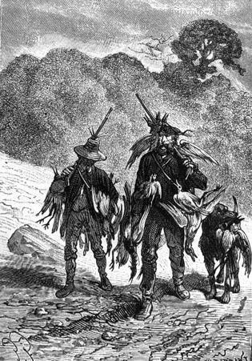
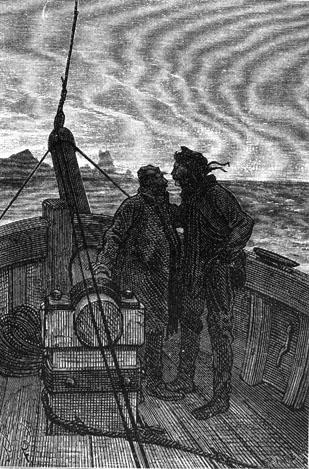

Two years already! and for two years the colonists had had no communication with their fellow men. They were without news from the civilized world, lost on this island just as surely as if they had been on some infinitesimal asteroid of the solar system.
What had occurred in their country during this time? The image of their native land was always before them, this land torn asunder by civil war at the moment when they left it. Perhaps it was still bloodied by the South’s rebellion. This was painful for them and they spoke of it often without however doubting that the cause of the North must triumph for the honor of the American federation.
During these two years not a vessel had passed in sight of the island or at least no sail had been seen. It was evident that Lincoln Island was outside the usual ship lanes and even that it was unknown—this was proved by the maps—because though there was no port, vessels would have landed there to renew their provision of fresh water. But the sea which surrounded them was always deserted as far as they could see, and they could only count on themselves for rescue.
However one chance for salvation existed and this chance was discussed one day in the first week of April when the colonists were together in the large hall of Granite House.
They were speaking of their native land, America, and wondering if there was a small hope of seeing it again.
“Decidedly, we have only one way,” said Gideon Spilett, “only one way of leaving Lincoln Island, to construct a vessel large enough to take to the open sea for several hundred miles. It seems to me that if we can make a boat, we can just as well make a ship.”
“Which would go to the Tuamotus,” added Herbert, “the way we went to Tabor Island.”
“I do not say no,” replied Pencroff, who always had the deciding vote on maritime questions. “I do not say no, although a short journey is not the same thing as a long one. If our boat had been menaced by some bad windstorm during our voyage to Tabor Island, we would have known that port was not far off either on one shore or the other; but to cross twelve hundred miles, that’s quite a trip and the nearest land is at least that distance.”
“Would you not chance it, Pencroff, in that case?” asked the reporter.
“I will undertake anything that is required, Mister Spilett,” replied the sailor, “and you well know that I am not a man to hold back.”
“Remember besides, that we now have another sailor amongst us,” noted Neb.
“Who?” asked Pencroff.
“Ayrton.”
“That’s right,” replied Herbert.
“If he would consent to come,” noted Pencroff.
“Fine!” said the reporter, “do you believe that if Lord Glenarvan’s yacht had presented itself at Tabor Island while Ayrton was still living there, that he would have refused to leave?”
“You forget, my friends,” Cyrus Smith then said, “that Ayrton no longer had his sanity during the last years of his stay. But that is not the question. We must know if we can count on the return of the Scotch vessel as one of our chances for rescue. Now Lord Glenarvan had promised Ayrton that he would come to take him from Tabor Island when he judged that his crimes had been sufficiently expiated, and I believe that he will return.”
“Yes,” said the reporter, “and I will add that he will return soon because it is twelve years that Ayrton has been abandoned.”
“Well,” replied Pencroff, “I agree with you that the lord will return, even soon. But where will he land? At Tabor Island and not at Lincoln Island.”
“That is surely the case,” replied Herbert, “since Lincoln Island is not even on the map.”
“So, my friends,” replied the engineer, “we must take the necessary steps to announce our presence and that of Ayrton at Lincoln Island.”
“Evidently,” replied the reporter, “and nothing could be easier than leaving a notice in the cabin used by Captain Grant and Ayrton, giving the position on our island, a notice which Lord Glenarvan and his crew cannot fail to find.”
“It is unfortunate,” noted the sailor, “that we forgot to take this precaution on our first voyage to Tabor Island.”
“And why should we have taken this precaution?” replied Herbert. “At the time we did not know Ayrton’s history. We did not know that they would come one day to rescue him, and when we knew his story the season was too far advanced to allow us to return to Tabor Island.”
“Yes,” replied Cyrus Smith, “it was too late, and we must make this trip next spring.”
“But if the Scotch yacht comes in the meantime?” said Pencroff.
“That is not probable,” replied the engineer, “because Lord Glenarvan would not choose the winter season to venture into these distant seas. Either he has already returned to Tabor Island while Ayrton was with us, that is to say in the last five months, and he has left, or he will come later, and there will be time during the first fine days of October to go to Tabor Island and leave a notice there.”
“It must be admitted,” said Neb, “that it would be very unfortunate if the Duncan has returned to these seas in the last few months.”
“I hope that that is not so,” replied Cyrus Smith, “and that Heaven has not taken from us the best chance that remains for us.”
“I believe,” noted the reporter, “that in any case, we will know what we have to contend with when we return to Tabor Island, because if the Scotchmen have been there, they would have necessarily left some trace of their passage.”
“That is evident,” replied the engineer. “Thus my friends, since we have this chance for being rescued, let us wait patiently, and if it is taken from us we will see then what we must do.”
“In any case,” said Pencroff, “it is well understood that if we leave Lincoln Island by one means or another, it will not be because we find fault with it.”
“No, Pencroff,” replied the engineer, “it will be because we are far from all that a man cherishes most in the world, his family, his friends, and his native land.”
Things being thus decided, there was no longer any question of undertaking the construction of a rather large vessel in order to venture either to the archipelagos in the north or to New Zealand in the west. They occupied themselves only with their usual tasks with the view to wintering in Granite House for the third time.
Nevertheless, it was decided that the boat would be used to take a trip around the island before the bad season came on. The complete reconnaissance of the coasts had still not been accomplished and the colonists had only an imperfect idea of the shore to the west and the north from the mouth of Falls River to the Mandible Capes, not excluding the narrow bay cut between them like the jaw of a shark.
The proposal for this excursion was first suggested by Pencroff, and Cyrus Smith gave his full approval. He wanted to see for himself all of this portion of his domain.
The weather at the time was variable, but the barometer did not fluctuate with sudden changes and they could count on moderate conditions. More precisely, during the first week of April, after a large barometric drop, a return to a rising barometric pressure was indicated by a strong windstorm from the west which lasted five to six days; then the needle of the instrument once again became steady at twenty nine point nine inches (759.45 mm) and the circumstances seemed favorable for the exploration.
The day of departure was fixed for the 16th of April and the Bonadventure, casting off from Port Balloon, was provisioned for a voyage which could be of some duration.
Cyrus Smith told Ayrton about the proposed expedition and suggested that he take part in it, but Ayrton, preferring to remain on land, it was decided that he would come to Granite House during the absence of his companions. Master Jup would accompany him and he made no objection.
On the morning of the 16th of April, all the colonists, accompanied by Top, embarked. A fine breeze blew from the southwest and the Bonadventure tacked on leaving Port Balloon in order to reach Reptile Promontory. Of the ninety miles that comprised the perimeter of the island, there were about twenty from the port to the promontory. It would be necessary to sail close-hauled for these twenty miles because the wind was dead ahead.
They needed not less that an entire day to reach the promontory because the boat, on leaving port, had only two hours of ebb tide and had, on the contrary, six hours of rising tide which made it very difficult to make headway. It was night time when the promontory was doubled.
Pencroff then proposed to the engineer that they continue the journey at reduced speed with two reefs in his sail. But Cyrus Smith preferred to anchor a few cables from land in order to again see this part of the coast during the daytime. It was even agreed that since they were conducting a careful exploration of the island, that they should not sail at night but when evening came they would throw anchor near land when the weather permitted it.
The night thus passed at anchor at the promontory and the wind having fallen with the night, the silence was not disturbed. The passengers, with the exception of the sailor, did not sleep quite as well on board the Bonadventure as they did in their rooms at Granite House, but at last they fell asleep.
The next day, the 17th of April, Pencroff weighed anchor at the break of day and by going on the larboard tack, he was able to draw near the western shore.
The colonists knew this magnificent wooded coast since they had already crossed this shore on foot. Nevertheless, it excited their admiration. By slowing down, they skirted land as close as possible so as to observe everything, but taking care not to collide with several tree trunks that were floating here and there. They even threw anchor several times, and Gideon Spilett took photographs of the superb coast.
Around noon, the Bonadventure arrived at the mouth of Falls River. Further on the right bank, the trees were more scattered and three miles beyond they only appeared in isolated clusters among the mountain’s western buttresses whose arid backbones reached to the shore.
What a contrast between the southern portion and the northern portion of this coastline! As much as one was wooded and verdant, the other was harsh and wild. They could refer to the latter as “the iron coast” as it is called in certain countries. Its tortured arrangement seemed to indicate a true crystallization which had been abruptly produced in the basalt while it was still molten in geological times. Piled up in a frightening way, it would have scared the colonists if they had first been thrown on this part of the island. When they were on the summit of Mount Franklin, they had not been able to recognize the deeply sinister aspect of this coast because they were up too high; but seen from the sea, this shore presented a strange character without equivalent perhaps in any corner of the world.
The Bonadventure passed before this coast at half a mile from shore. It was easy to see that it was composed of blocks of all dimensions, from twenty feet to three hundred feet in height, and of all forms, cylindrical as if made on a lathe, prismatic like steeples, pyramidic like obelisks and conical like a factory smokestack. For sheer horror, an icepack from the glacial seas could not have been more capriciously designed. Here bridges thrown from one rock to another, there arches arranged like the nave of a cathedral into whose depths the eye could not penetrate; in one place there were large excavations whose vaults presented a monumental aspect; in another place a conglomeration of sharp corners, pyramids and arrows such as no gothic cathedral ever had. All the caprices of nature, still more varied than those of the imagination, were arranged along this grandiose coast which extended for a distance of eight to nine miles.
Cyrus Smith and his companions looked at all of this with a surprise that bordered on stupefaction. But if they remained mute, Top was not inhibited from barking. His echoes repeated by the thousands against the basalt wall. The engineer even noted that these barks had something strange about them, like those that the dog had made at the opening of the well in Granite House.
“Let’s come alongside,” he said.
And the Bonadventure grazed as close as possible to the rocks on the coast. Perhaps there was some grotto here that was worth exploring? But Cyrus Smith saw nothing, not a cavern nor a fracture which would serve as a retreat for any being whatsoever because the foot of these rocks was washed by the very surf of the water. Top soon stopped barking and the boat went back to a few cables from shore.
In the northwest portion of the island, the shore became flat and sandy. A few rare trees grew above the low and marshy land that the colonists had already caught a glimpse of and, in violent contrast with the other deserted coast, life was in evidence by the myriads of water fowl.
That evening, the Bonadventure anchored near land in a slight recess of the northern shoreline where the water was deep. The night passed pleasantly because the wind died out, so to speak, with the last rays of daylight, and started up again only at daybreak.
Since it was easy to come alongside land on this morning, the appointed hunters of the colony, that is to say Herbert and Gideon Spilett, took a walk for two hours and returned with several strings of duck and snipe. Top did well and no game was lost thanks to his zeal and his skill.

They returned with several strings of duck.
At eight o’clock in the morning, the Bonadventure weighed anchor and moved rapidly toward North Mandible Cape because the wind was aft and becoming stronger.
“Besides,” said Pencroff, “I will not be surprised if we have a windstorm from the west. Yesterday the sun set on a very red horizon and now this morning these ‘cat tails’ foretell nothing good.”
These cat tails were slender cirrus clouds scattered at the zenith whose height is never less than five thousand feet above sea level. One could call them flimsy pieces of cotton whose presence ordinarily announces some approaching trouble in the weather.
“Well,” said Cyrus Smith, “let us carry as much sail as we are able to carry, and seek refuge in Shark Gulf. I think that the Bonadventure will be safe there.”
“Perfectly,” replied Pencroff, “and besides, the north shore is only formed of dunes and is of little interest.”
“I will not be unhappy,” added the engineer, “to pass not only the night but even tomorrow in this bay which deserves to be carefully explored.”
“I believe that we will be forced to do it whether we like it or not,” replied Pencroff, “because the horizon in the west is becoming menacing. See how dirty it is.”
“In any event, we have a good wind for getting to Cape Mandible,” noted the reporter.
“A very good wind,” replied the sailor, “but to enter the gulf, we must tack and I would rather have a clear view of these unknown waters.”
“Waters which may be full of rocks,” added Herbert, “if we are to judge by what we saw of the southern coast of Shark Gulf.”
“Pencroff,” Cyrus Smith then said, “do what is best. We leave it to you.”
“Be calm, Mister Cyrus,” replied the sailor, “I will not expose myself needlessly. I would rather have a knife in my vital organs than a rock in those of my Bonadventure.”
What Pencroff called vital organs was that part of his boat below the water line and he loved it more than his own skin.
“What time is it?” asked Pencroff.
“Ten o’clock,” replied Gideon Spilett.
“And at what distance are we from the cape, Mister Cyrus?”
“About fifteen miles,” replied the engineer.
“That’s a matter of two hours and a half,” the sailor then said, “and we will come alongside the cape between noontime and one o’clock. Unfortunately, the tide will be reversing at that moment and the ebb will be leaving the gulf. I fear that it will be difficult to enter it having wind and sea against us.”
“What’s more, the moon is full today,” noted Herbert, “and these April tides are very strong.”
“Well, Pencroff,” asked Cyrus Smith, “can you anchor at the cape’s point?”
“Anchor near land with bad weather coming on!” shouted the sailor. “What are you thinking of, Mister Cyrus? That would surely ground us.”
“Then what would you do?”
“I would try to keep in the open sea until the flood tide, that is to say until seven o’clock in the evening, and if there is still some light I will try to enter the gulf; otherwise we will stand off during the entire night and we will enter tomorrow at sunrise.”
“As I said Pencroff, we leave it to you.” replied Cyrus Smith.
“Ah!” said Pencroff, “if there only was a lighthouse on this coast, it would be very convenient for navigators.”
“Yes,” replied Herbert, “and this time we will not have an obliging engineer to light a fire to guide us into port.”
“Incidentally, my dear Cyrus,” said Gideon Spilett, “we never thanked you, but frankly without that fire we never would have been able to reach...”
“A fire?...” asked Cyrus Smith, very astonished at the reporter’s words.
“We mean to say, Mister Cyrus,” replied Pencroff, “that we were in trouble on board the Bonadventure during the final hours preceding our return and we would have passed windward of the island if not for the precaution which you took of lighting a fire during the night of the 19th to the 20th of October on Granite House Plateau.”
“Yes, yes!... That was a happy idea that I had there,” replied the engineer.
“And this time,” added the sailor, “at least if the idea does not occur to Ayrton, there will be no one to render us this small service.”
“No! no one!” replied Cyrus Smith.
And a few moments later, finding himself alone with the reporter in the front of the boat, the engineer bent over to his ear and said to him:

The engineer bent over to his ear and said to him...
“If there is one thing certain in this world, Spilett, it is that I never lit any fire during the night of the 19th to the 20th of October, neither on the plateau of Granite House nor on any other part of the island!”